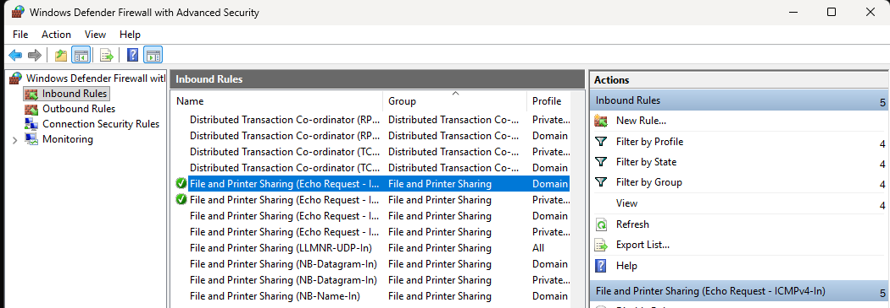
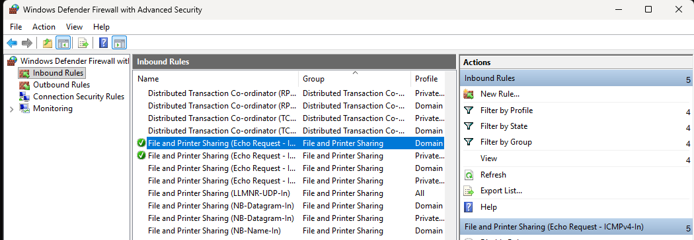
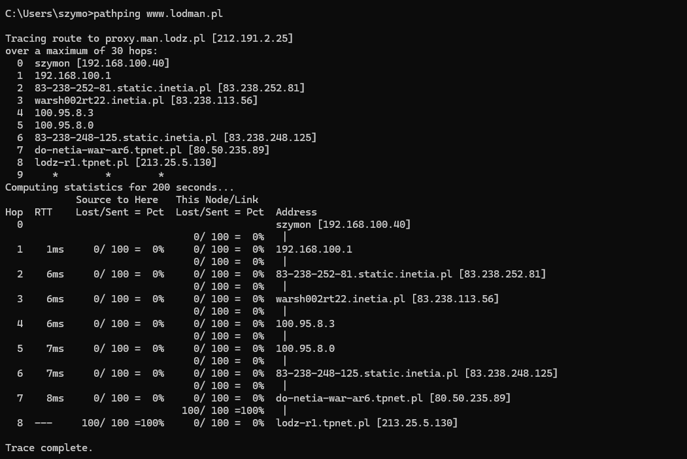
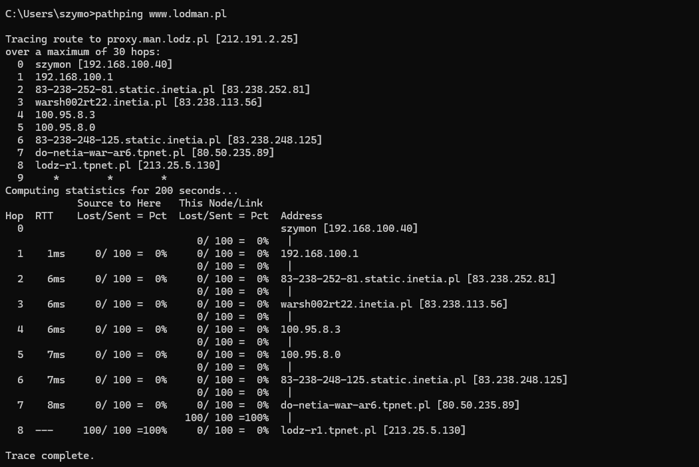

Prectical part
1. Use ping, pathping, tracert to the following hosts:
1.1 Computer in local network
 

1.2 www.onet.pl


1.3 google.com


1.4 google.pl


1.5 lodman.pl
 


1.6 Identify physical location of abovementioned servers
1.7 When using tracert assign consecutive hops to private/public network addresses.
1.8 Check ip address and physical address of your host using ipconfig